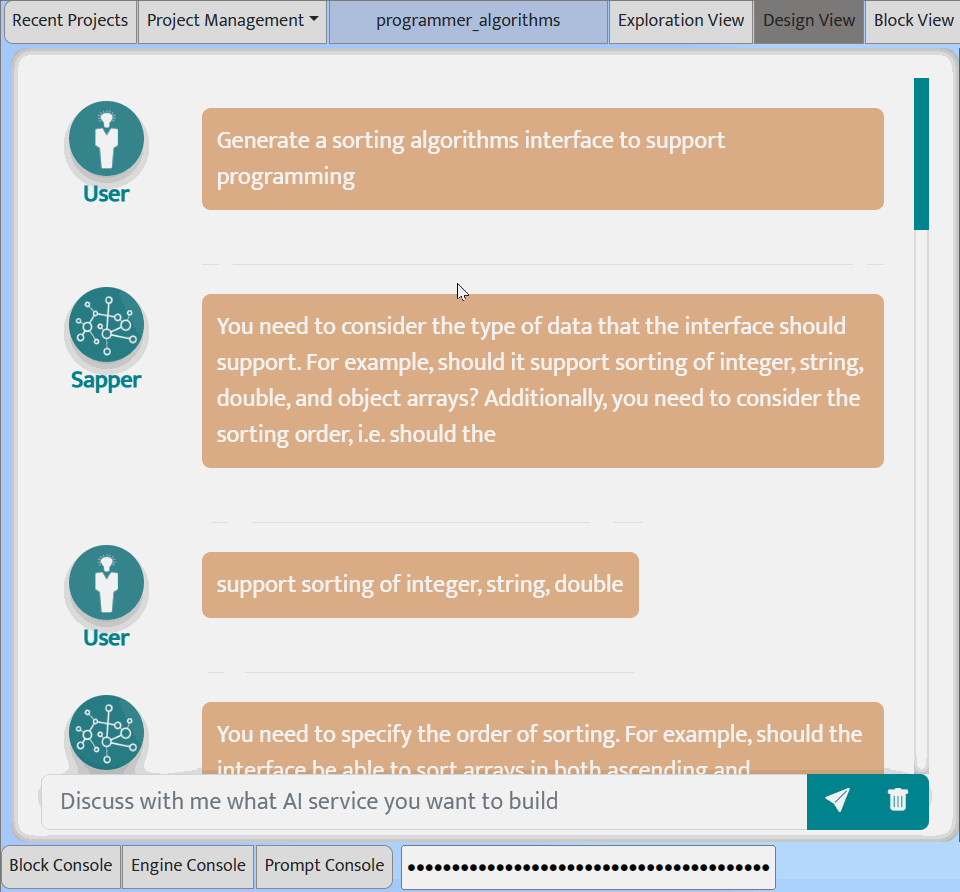
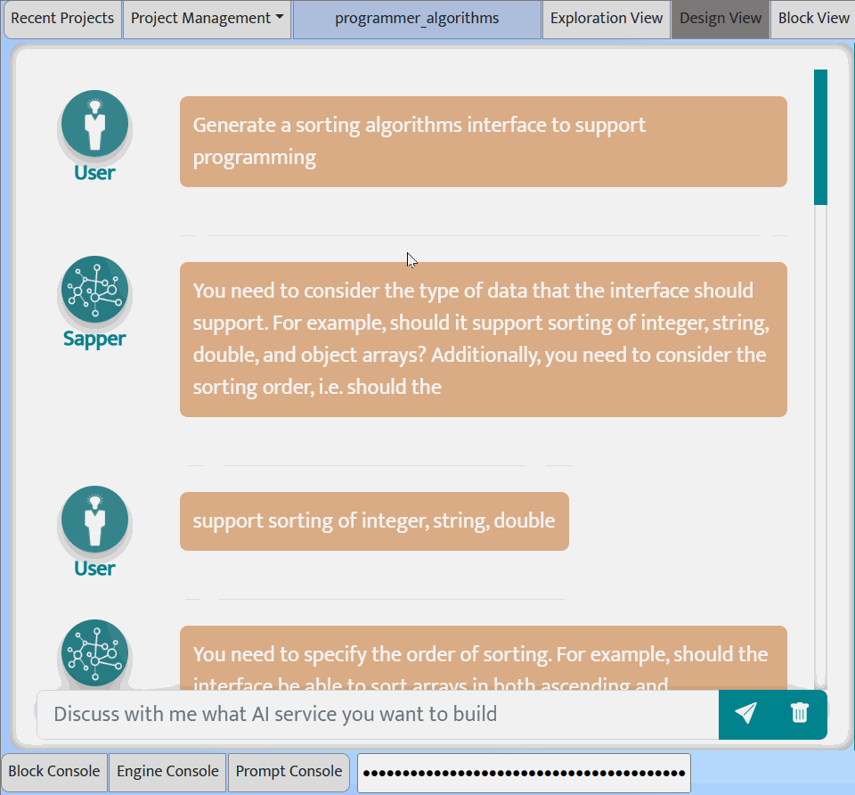

Prompt Sapper vs. Autonomous Agent Frameworks
Spectrum of Human-AI Interaction
| AutoGPT | Prompt Sapper |
|---|---|
| Content generation by generative AI | Software production by AI4SE4AI |
| Pre-defined agent workflow | The "mother" of any AI chains |
| Autonomy but lack of interactivity, customizability and controllability | Balanced autonomy, interactivity, customizability and controllability |
| No explicit awareness of software process, methods and values | Software process, methods and values are in the DNA |
| Black box may lead to unpredictable, security and ethical issues | Transparent, secure and responsible AI |
In contrast to human-driven conversational bots, autonomous agent frameworks sit on the opposite end of the human-AI collaboration. They minimize human involvement to the greatest extent possible, allowing AI to fully control the workflow autonomously, . Many such agent frameworks have been proposed recently, such as ChatGPT Plugins, HuggingGPT, Visual-ChatGPT, TaskMatrix.AI, AutoGPT, BabyAGI, autolang, CAMEL, AgentGPT, Adept, HyperWriterAI, which some people argue are the step towards Artificial General Intelligence (AGI).
Users can ask these agent frameworks to complete a task they know little or nothing about. Users simply express their goals in natural language, and the AI takes care of the rest. These agent frameworks are built upon the capabilities of large language models, creating autonomous agents with diverse functionalities to collaboratively meet user needs. Agents can understand or expand goals, plan task steps, determine which model or tool to use for each step, and progressively accomplish tasks.
Autonomy versus Interactivity, Customizability, Controllablity
Altnough autonomous agent frameworks have demonstrated impressive capabilities and promising prospects, their autonomy is most suitable for scenarios with clearly defined task objectives, without the need for user interaction. Furthermore, the success of autonomous agents heavily relies on the LLM's ability to accurately decompose tasks and map sub-tasks to corresponding models or API functions, which is still very limited compared to human abilities, despite continuous improvements.
Unfortunately, this major limitation has been overshadowed by many "successful" experiments, because in these "successful" experiments of autonomous agent frameworks, people have a very broad goal and care about only the stunning effect of the final result, without any specific task requirements or concern for the details of the results. In other words, as long as the framework can run the task to achieve the broad goal, any result is considered to meet the requirements.
Taking the autolang demo as an example, the user's broad goal is to implement three sorting algorithms, and autolang autonomusly plan and complete the task in five steps.
- In the first step, the agent recommends three sorting algorithms, but there is no chance for the user to choose whether these three algorithms are what they need (of course, the demo author does not care about which algorithm it is). In the end of this step, the agent asks the user if they need an explanation for the three algorithms, but it doesn't allow the user to input whether they need it or not, and directly proceeds to the second step. This question is generated by the LLM, but the actual workflow of the agent framework cannot handle the user interaction.
- Steps two to four involve generating code and test cases, which is also determined by the agent on its own. For example, it generates three test cases without considering whether the user thinks three test cases are enough. Why do the three algorithms use completely different test cases? The user may not need test cases, such as when the user assigns the generated algorithm as homework for students to generate test cases. In addition, the generated three algorithms are independent of each other, without considering good software engineering practices, such as suggesting a sorting interface to support programming to interface.
- The last step assumes that the user wants to put all three algorithms in one file, which is also entirely agent-determined. However, the user may need each algorithm in a separate file, such as sending different algorithms to different students to complete the testing.
Some people might argue that they can clarify requirements and modify results through dialogue after the generation is completed, but this is not the optimal approach from both usability and economic perspectives. As a content generation tool, the agent framework needs to re-run the entire (costly) process for even minor changes in requirements. Additionally, due to the randomness of the model, it can be difficult to control what results the agents will autonomously generate in their next run. In summary, autonomy comes at the expense of interactivity, customization, and controllability.
Looking at this problem from a software engineering perspective, it is normal for users to provide initial requirements that are incomplete or ambiguious for real-world applications, such as those in our showcases. A poor practice that software engineers should avoid is not interacting with users, but rather relying on their own understanding and preferences to decide what users need and build the product directly, which often results in the delivered software product not being the "right product" for the user needs, even if the product itself is flawless. Although agile development methods can quickly collect user feedback and make corrections, it ultimately wastes development resources and time. By analogy, these agent frameworks are like those poor "software engineers", who are potentially capable but possibly too autonomous and thus overlooking user needs. Similar to software engineering, addressing issues in earlier steps can help prevent costly rework.
 

Unlike autonomous agent frameworks, Prompt Sapper emphasizes understanding domain knowledge and clarifying requirements and designs before construating a solution. It provides user interfaces and co-pilots to support interaction and clarification with users, instead of taking the user's initial input as granted and directly constructing an AI chain solution. To be fixed: The above figure shows how Propmt Sapper interacts with the user to clarify what he actually needs for "implementing three sorting algorithms" in the Design view. Note that users with different needs (e.g., teacher versus developer) may end up with very different task requirements.
Once the user needs are clear, Prompt Sapper utilizes autonomous agents to plan the task steps and their implementation, and assembles a directly executable AI chain, while it still offers ways for users to customize and modify the generated steps, considering the inadequate divide-and-conquer ability of GPT. This type of human-AI teamwork puts human first, while keeping machine in the loop, achieving a balance between autonomy, interactivity, customization, and controllability.
Content Generation versus Software Engineering
Autonomous agent frameworks are designed to fulfill user's high-level goals using a predefined agent workflow. They can accomplish diverse tasks, even operate apps to order pizza or book hotels, create software applications, or control robots. However, the agent workflow is task-agnostic. For example, when generating a software application, even though the agent plans the development steps, the agent framework workflow itself does not involve any software development process or methodology. In contrast, Prompt Sapper is built on an explicit AI chain methodology and provides explicit whole-process support for AI chain production, from requirements to design, construction and testing.
Furthermore, autonomous agent frameworks are essentially content generation tools, rather than software production tools, so they do not directly support important software values such as modularity, reusability, debuggability, and composability, and any modification requires the entire agent framework to be re-run. Whereas, these software engineering values are embedded in the DNA of Prompt Sapper.
Third, the black-box operation of autonomous agent frameworks may lead to unpredictable, security and ethical issues, for example, a shopping agent may autonomously purchase hazardous items. It is a significant challenge to rely solely on AI to solve these security issues. In contrast, Prompt Sapper supports transparent design and modular debugging of AI chains, and responsible AI practices can be embedded in the AI chain production process, which will help improve the safety and reliability of AI services.
Finally, autonomous agent frameworks are essentially AI chain tools, then Prompt Sapper is the mother of such tools. That is, people can use Prompt Sapper to develop any agent frameworks or task-specific AI chains. By transparent, fine-grained customization, debugging, and assembly of agents (workers in Prompt Sapper), we can provide more and higher quality AI services.